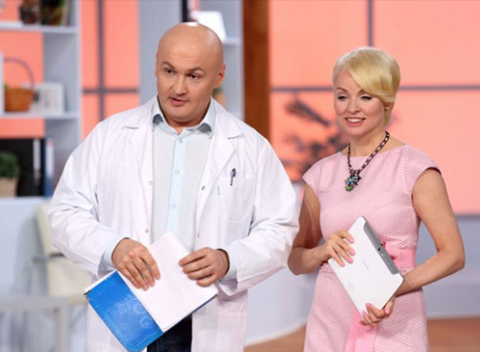
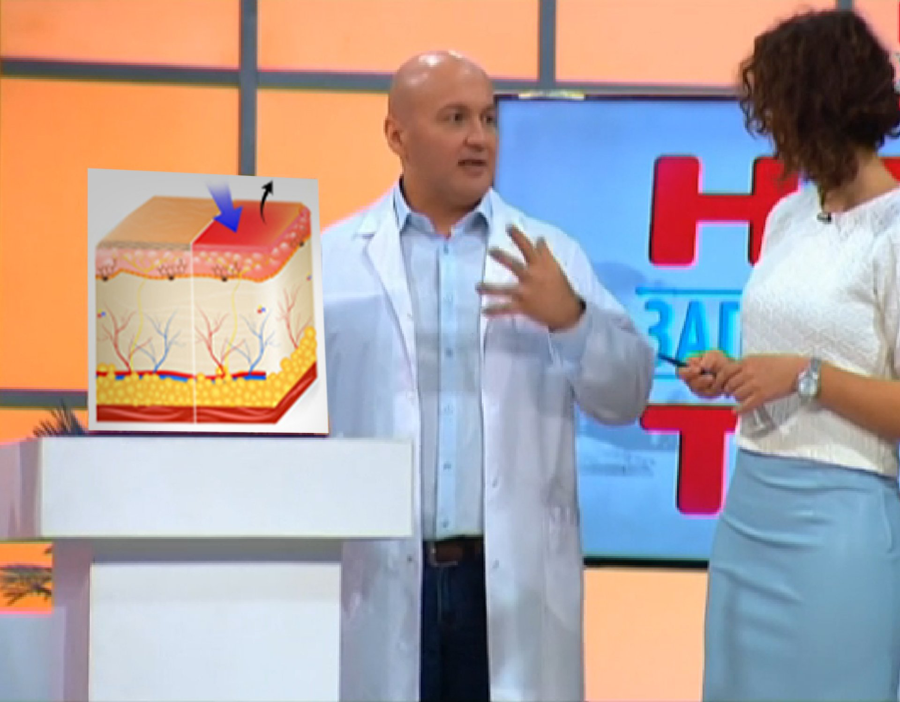
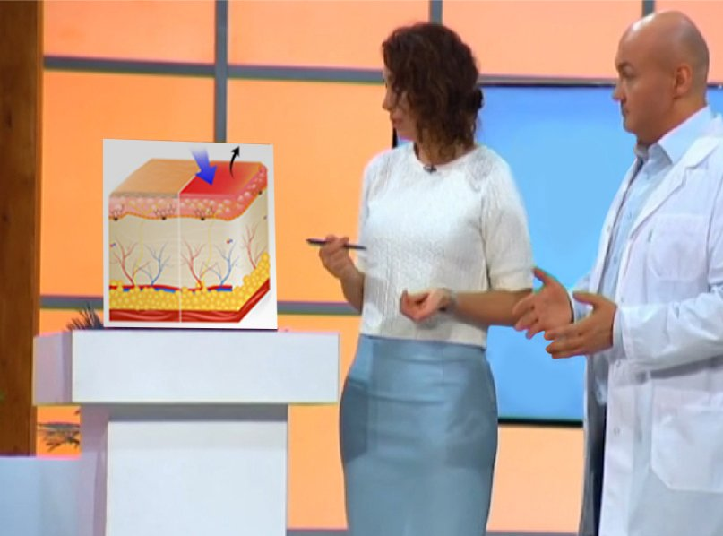
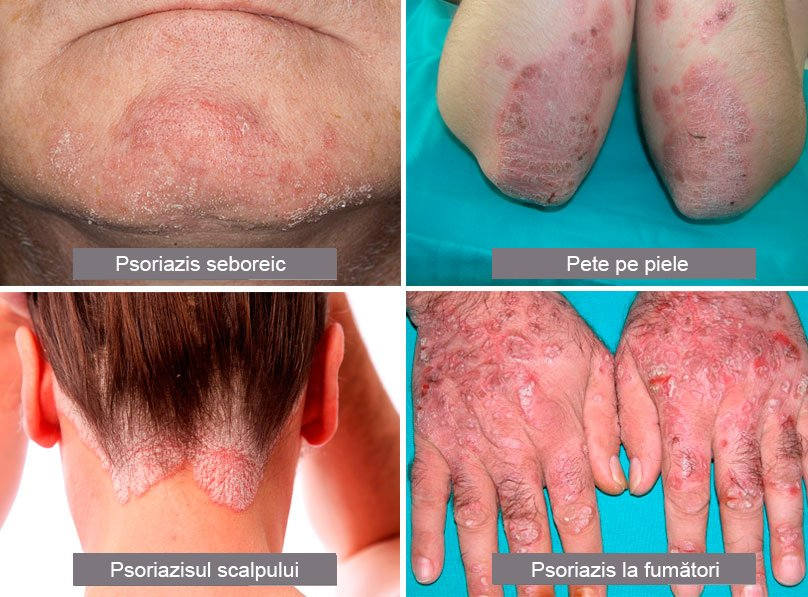
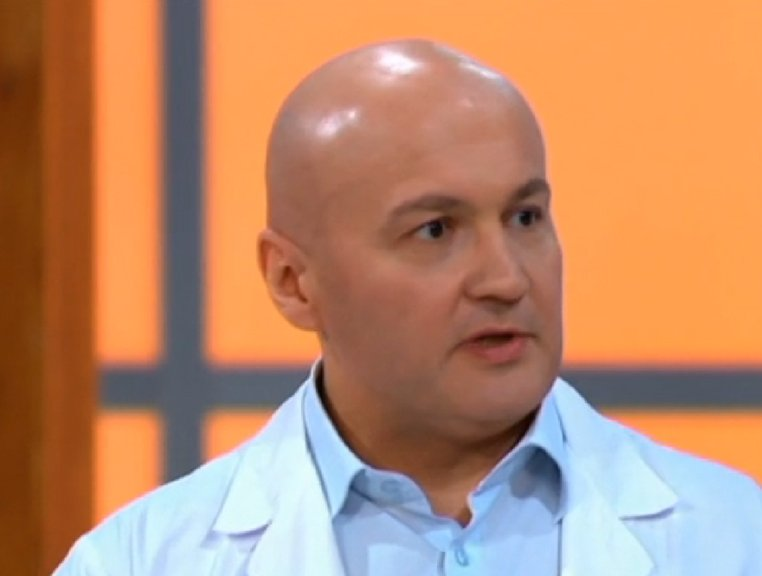
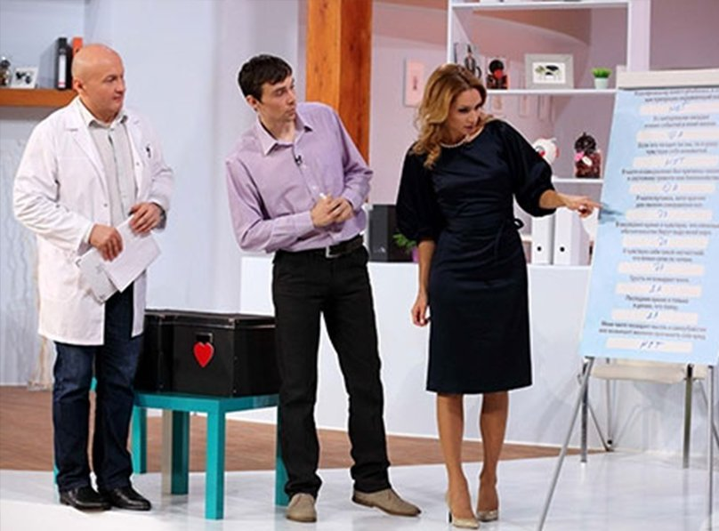
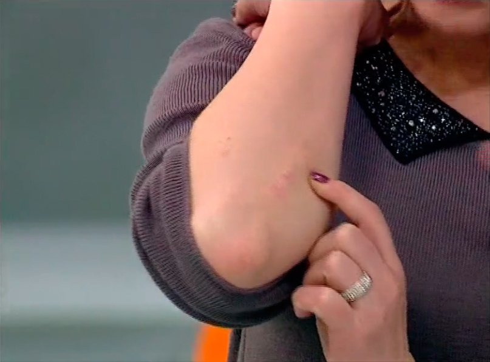

SĂNĂTATE
PSORIAZISUL DISPARE INSTANTANEU!
Descoperire uimitoare în tratarea psoriazisului
Ideea că PSORIAZISUL nu poate fi vindecat complet s-a înrădăcinat în mințile oamenilor acum mult timp. Pentru a se bucura de o alinare, o persoană trebuie să ia mereu medicamente farmaceutice scumpe. Dar este aceasta singura opțiune? Să aruncăm o privire mai atentă!
 Dr. Constantin Florescu și emisiunea TV „Sănătatea pentru toți” vă vor spune despre tratamentul PSORIAZISULUI
Bună ziua! Sunt dr. Constantin Florescu și aceasta e emisiunea mea „Sănătatea pentru
toți” care e dedicată problemelor bunăstării umane. Cum poți distinge simptomele reale
ale bolii de cele false? Ce trebuie să faci pentru a rămâne sănătos pentru cât mai mult timp
posibil?
Subiectul emisiunii de azi e PSORIAZISUL!
Psoriazisul sau alphos e o boală de lungă durată care nu este contagioasă. O dermatoză
care afectează de obicei pielea. În prezent, boala e considerată a fi autoimună.
De
obicei, psoriazisul e caracterizat prin pete anormale pe piele, care sunt roșii, foarte uscate
și ridicate deasupra suprafeței pielii. Aceste pete sunt așa-numite papule.
Aceste
papule sunt părți ale unei inflamații de durată și proliferare excesivă a limfocitelor,
macrofagelor, keratinocitelor pielii și angiogenezei excesive (procesul de formare a noilor
capilare) în stratul inferior al pielii.
Majoritatea persoanelor încă cred că psoriazisul e o boală contagioasă. Să aflăm adevărul despre această boală misterioasă și să clarificăm cine este supus riscului de a o contacta.
Medicul Anca Grigor mă va ajuta cu această sarcină dificilă.
 Anca Grigor Dermatolog, doctor în medicină
Constantin Florescu: „Anca, ai putea să-mi spui despre boală și ce o cauzează?”
Anca Grigor: „Cauzele psoriazisului rămân necunoscute. Există un premiu uriaș în bani stabilit la sfârșitul secolului XIX, de către familia Rothschild, din cauza faptului că mulți membri ai familiei au suferit de această boală. Suma premiului a întrecut-o pe cea oferită de către Premiul Nobel acum mult timp. Banii vor fi plătiți unei persoane sau entități care poate identifica cauzele exacte ale psoriazisului.”
Constantin Florescu: „Totuși, îmi pare că ai menționat deja una dintre cauze în exprimarea ta. E predispoziția genetică, aceasta fiind observată la 40% dintre persoanele afectate de psoriazis. Putem spune că nu știm cauzele, dar știm factorii care favorizează dezvoltarea bolii. Să aruncăm o privire mai atentă la aceștia:”
 Constantin Florescu: cauze posibile ale PSORIAZISULUI
Constantin Florescu: „Să vedem ce avem aici.
Ereditate, desigur. Ei
bine, am menționat-o deja.
Apoi vine fumatul. Poate că fumatul nu a fost cauza
psoriazisului. Dar boala va fi mai complicată dacă fumezi. Tălpile și palmele tale vor suferi
cel mai mult. Fumatul poate să declanșeze dezvoltarea psoriazisului, în special la unghii.
Excesul de greutate și obezitatea pot cauza, de asemenea, psoriazisul.
Nu e
menționat aici că stresul poate să fie, de asemenea, o cauză a psoriazisului, fapt dovedit.
Stresul poate să contribuie mult. De ce depinde? Există multe teorii, majoritatea bazate pe
imunologie, în consecință tratamentul e bazat pe această știință.
Să vedem cum poate să
arate.”
 Tipuri de psoriazis
Anca Grigor: „Primul tip e psoriazisul seboreic, care e frecvent diagnosticat
greșit de medici.
Al doilea tip e psoriazisul obișnuit, care cauzează petele pe piele.
Aceasta sunt prezente de obicei pe coate și genunchi.
Al treilea tip e când psoriazisul
afectează scalpul. Când acest tip de psoriazis e depistat la copii, e uneori identificat în mod
greșit ca fiind dermatită atopică.
Și al patrulea tip e cel obișnuit, în care
manifestările bolii sunt prezente pe brațele fumătorilor experimentați. Când vezi tălpile și
palmele grav afectate, acest lucru semnalează că o persoană fumează mult.
Constantin Florescu: „Singurul lucru pe care aș dori să-l adaug la ceea ce ai văzut deja e că psoriazisul îți poate afecta nu doar pielea, ci și articulațiile. Mă refer atât la articulații mari cât și la cele mici, precum cele de la degete sau degetele de la picior. Acest lucru e foarte ilustrativ.”
 Constantin Florescu: Psoriazisul afectează articulațiile mici.
Constantin Florescu: „Ei bine, acum e timpul să-i spunem bună ziua pacientei noastre. Bună, Corina! Te rog spune-ne povestea ta!”
Corina: „Am psoriazis obișnuit pe articulațiile coatelor. Din păcate, boala e activă în special vara.”
Constantin Florescu: „Sună neobișnuit. Soarele previne de obicei progresul bolii.”
Anca Grigor: „Acest lucru e adevărat doar în cazul așa-numitului psoriazis de iarnă. Când o persoană e afectată de acest tip de boală și e expusă frecvent la lumina soarelui pe durata lunilor de vară, exacerbarea psoriazisului e imposibilă. Totuși, în această situație ne confruntăm cu un tip urât de psoriazis, care e un tip de vară, ceea ce înseamnă că starea influențată de soare devine mai complicată. O persoană nu are suficiente mijloace de îngrijire. Orice poate fi folosit, dar nu lumina soarelui.
Corina: „Am avut și psoriazis pe articulații. Vreau să zic că uneori exacerbarea bolii a dus la expansiunea acesteia de-a lungul articulațiilor. Am simțit atât de multă durere la nivelul coatelor, încât nu puteam să țin nici măcar un ibric în mână. Eram foarte restrânsă în mișcări și exista o durere acută la nivelul cotului.”
 Corina: Psoriazis pe încheietura cotului
Constantin Florescu: „OK. Acum să vorbim despre tratament.”
Anca Grigor: „Când Corina a venit la noi cu problema ei, a fost diagnosticată cu o exacerbare tipică a bolii, care a afectat încheieturile coatelor sale. I s-a prescris un curs de tratament cu cel mai nou medicament, care a fost supus tuturor testelor clinice necesare și și-a dovedit eficacitatea. Este vorba despre . Corina, ai putea să ne spui te rog despre tratamentul tău?”
Corina: „Nu e fost dificil deloc. Crema e vândută într-un pachet care e furnizat cu instrucțiuni detaliate de administrare. Tot ce trebuie să faci este să aplici crema pe zonele afectate ale pielii și să aștepți până când e complet absorbită. Când am început să folosesc crema, am simțit alinare chiar din prima zi. Focarul bolii se micșora în fiecare zi.”
Constantin Florescu: „Corina, ai putea te rog să ne demonstrezi ce rezultate ai reușit să obții în cele 7 zile de folosire a cremei?”
Corina: „Plăcerea mea, Constantin! Psoriazisul a dispărut aproape complet în doar o săptămână. Au rămas câteva focare care aștept să dispară în următoarele 3-4 zile. Mai mult de atât, psoriazisul nu mi-a mai afectat articulațiile.”
 Corina: Rezultatul folosirii cremei timp de 7 zile.
Anca Grigor: „Vreau să adaug faptul că crema nu e un medicament hormonal. În consecință, poate fi folosită de orice persoană fără restricții. Crema reduce în mod treptat numărul de celule divizate. Acest lucru ajută la prevenirea efectului de piele exfoliată și normalizează microcirculația sângelui în straturile superioare ale pielii. Ca urmare, psoriazisul dispare în două sau trei săptămâni în funcție de gravitatea bolii.”
Constantin Florescu: „După cum poți vedea, parcursul către sănătate nu e atât de dificil. Poți comanda aici . Acesta este site-ul oficial al producătorului.”
Crema originală poate fi comandată doar de pe site-ul oficial la care se face referire mai jos. Produsul are toate certificatele obligatorii și eficacitatea lui a fost dovedită. Ai grijă la înșelătorii. Produsele contrafăcute pot fi total ineficiente.
 Crema te va ajuta să scapi de psoriazis în câteva săptămâni
Crema te va ajuta să scapi de psoriazis în câteva săptămâni
Constantin Florescu: „Mulțumesc, Corina!”
Sper ca toți cei care
suferă de această boală să scape de ea. Te va face să te simți sănătos și fericit.
Aveți grijă, pe curând!
Constantin Florescu, „Sănătatea pentru toți”.
Am încercat diverse metode de tratament, dar efectul nu a fost niciodată de durată. Când am aflat de această cremă, am comandat-o imediat. O folosesc deja de 2 săptămâni și psoriazisul aproape că a dispărut. Mulțumesc, Constantin!
Crema e incredibil de folositoare. Mi-a luat nouă zile să mă vindec. Mulțumesc, .
Bună tuturor! Vreau să-mi exprim recunoștința profundă producătorului cremei și lui Constantin Florescu! Crema m-a ajutat foarte mult!!! Îmbunătățirea a fost aproape instantanee. Mai mult de atât, starea mea s-a îmbunătățit, am primit poftă nebună de a trăi și de a mă bucura de viață! Folosesc crema de o lună. Mulțumesc foarte mult!
Nu am putut să nu răspund la acest mesaj…Mariana, cu plăcere! Mă bucur pentru tine și sper ca această metodă de tratament să schimbe viețile multor persoane. Cu stimă, Alex.
Am comandat și eu crema și am primit-o prin poștă în 8 zile de la data comenzii. Încep tratamentul și vă voi ține la curent cu rezultatele.
Am suferit toată viața de psoriazis. Sper cu tărie că această cremă mă va ajuta. Voi plasa o comandă!
Am comandat crema pentru soțul meu. Rezultatele inițiale au fost vizibile după doar 3 zile. Focarele bolii au început să se diminueze și mâncărimea a devenit mai puțin intensă. Soțul meu continuă să folosească crema…
Salut. Informațiile sunt foarte interesante. Sunt o persoană sceptică din fire, dar vreau să încerc crema.
Am văzut multe comentarii despre această cremă, dar nu am știut dacă să o cumpăr sau nu. Dar dacă e recomandată de Constantin Florescu, cred că ar trebui să o comand.
Nu sunt sigur dacă această cremă ar putea să mă ajute… Sufăr de psoriazis de ceva timp.
Daniel, cu siguranță trebuie să comanzi crema! A ajutat deja multe persoane. O recomand cu încredere! Dacă nu îți place , vei primi un ramburs complet de la companie.
Am dat de acest articol din întâmplare. Ce văd?! Crema mea e promovată! Nu sunt producătorul, desigur. Vreau să spun că odată am cumpărat-o pentru soțul meu. L-a ajutat să scape de psoriazis în două săptămâni!
Am scăpat de psoriazis în 10 zile! Super! Cele mai profunde recunoștințe producătorului!
E greu de crezut… Totuși, dacă atât de multe persoane spun că funcționează, atunci trebuie să funcționeze. Voi începe să o folosesc mâine!
E un miracol. Am comandat crema imediat după ce am auzit de ea. Îmi doresc să fi știut de ea acum 5 ani. Aproape că am uitat că am psoriazis. Mulțumesc, Constantin!
Îmi amintesc că fratele meu mi-a zis odată despre această cremă! După ce am văzut o recomandare de la o persoană care are o reputație atât de bună, am folosit această cremă pentru tratamentul psoriazisului.
Mulțumesc! M-a ajutat foarte mult!! Situația mea era critică. Acum nu mai există niciun semn de psoriazis pe corpul meu!
Psoriazisul pur și simplu a dispărut fără urmă… A durat 10 zile! Mulțumesc pentru acest miracol! Mult noroc tuturor!
Visez să scap de psoriazis de mult timp. Mulțumesc foarte mult pentru informații. Voi face o comandă azi. Sper ca această cremă să mai fie în stoc.
Am scăpat de psoriazis acum șase luni, de îndată ce am aflat de această cremă. În consecință, o recomand tuturor. Multe zone ale corpului meu au fost afectate grav. Totuși, mi-a luat 20 de zile să vindec complet psoriazisul.
Am decis să comand crema la un preț mai mic de pe alt site. În cele din urmă, am primit ceva unguent prost cu hieroglife chinezești pe pachet. Părea să fie complet inutil. După aceea, am comandat de pe site-ul oficial. Am primit livrarea prompt prin poștă. Nu regret această comandă. Folosesc crema de 5 zile și e foarte bună.
Vreau să amintesc tuturor că crema trebuie să fie comandată DOAR de pe website-ul oficial .
Vă rog, atenție la înșelătorii.